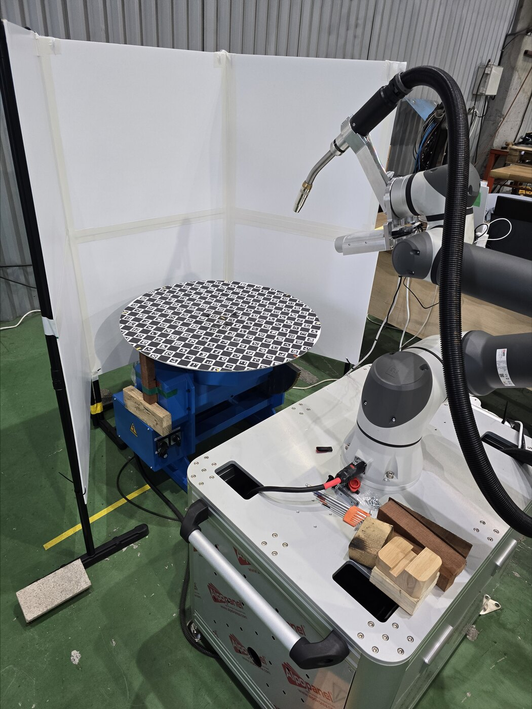
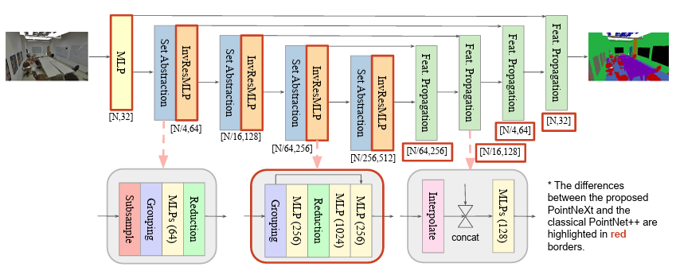
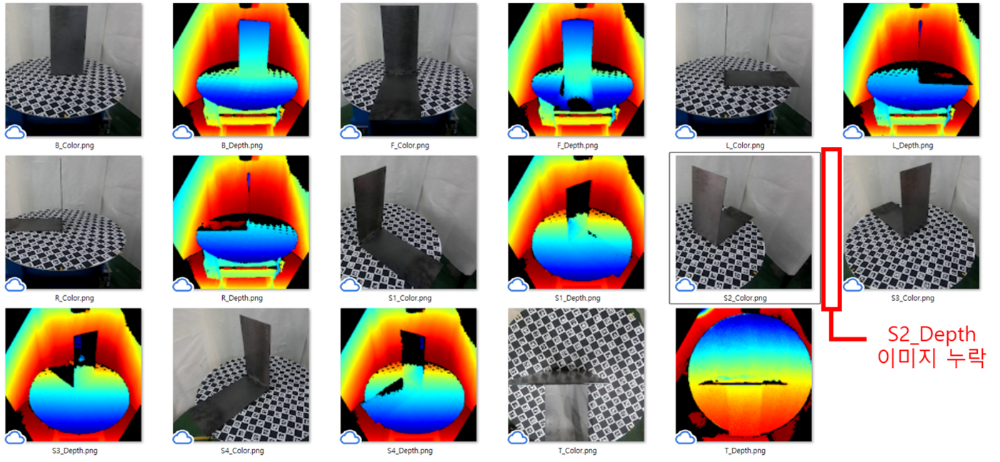
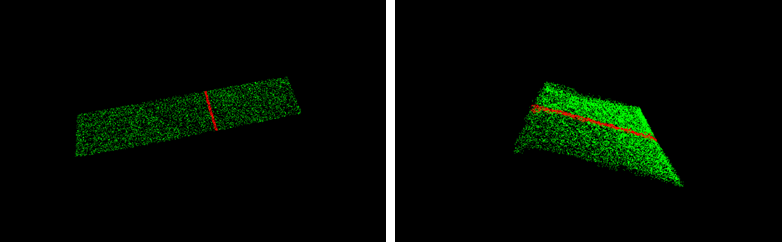

용접로봇행동생성 데이터
상용 협동로봇과 RGB-D 카메라로 다양한 용접 조건의 모재를 촬영하여 RGB-D 이미지·PCD·2D/3D 라벨링·로봇 티칭 데이터를 구축하고, YOLOv12 및 PointNeXt 기반 AI 유효성 검증으로 용접 로봇 행동 생성용 데이터셋의 활용 가능성을 실증한 NIA 초거대AI 확산 생태계 조성 사업(3차) 과제.
Overview
본 과제는 한국지능정보사회진흥원(NIA) 주관 「2025년도 초거대AI 확산 생태계 조성 사업(3차)」의 일환으로, 용접 작업 대상 모재를 여러 방향에서 촬영한 RGB-D 데이터와 로봇 구동 정보를 결합하여 용접 로봇의 행동 생성을 학습할 수 있는 멀티모달 데이터셋을 구축하는 데이터 구축 사업입니다. 주관기관 흥일기업(주), 참여기관 국립한밭대학교 산학협력단으로 구성된 컨소시엄이 수행하였습니다.
조선·중공업 등 제조 현장의 고령화와 용접 인력난, 그리고 위험 공정에서의 산업재해 예방 수요가 커지는 가운데, 작업 조건과 형상이 수시로 달라지는 용접 공정의 현장 데이터를 정형화하는 것이 지능형 자동화의 핵심 과제로 대두되었습니다. 본 과제는 비정형 용접 구간과 로봇 작업 정보를 체계적으로 데이터화하여 숙련 의존 공정을 표준화하고, 자율 용접 행동 생성·최적화 등 후속 기술개발을 위한 학습·검증용 자원을 제공하는 것을 목표로 합니다.

Approach
- 흥일기업 제조시설 내에 상용 협동로봇 팔과 RGB-D 카메라, 턴테이블을 설치하여 연구용 데모가 아닌 산업 현장 재현성을 고려한 수집 환경 구축
- 5종의 용접 방식(Butt/Edge/Lap/Tee/Corner)과 6종의 모재 형태·재질·두께·크기를 고려한 1,500개 모재 촬영 시나리오 설계로 데이터 편향 예방
- 모재 중심 9개 방향(25˚, 45˚, 수직)에서 RGB·Depth 이미지를 취득하고, 동시에 로봇 관절 좌표 등 티칭 데이터와 수집환경 메타데이터를 별도 수집
- 1개 모재당 9장의 Depth 영상을 정합해 PCD(Point Cloud Data)를 생성하고, 정합 오류 검수와 노이즈 제거 정제를 거쳐 데이터 품질을 확보
- 가용접 지점(Point)·본용접 구간(Polyline)에 대한 2D 라벨링과 본용접 구간 중심의 3D Segmentation 라벨링을 수행하여 멀티모달 학습용 데이터로 가공
- YOLOv12 기반 2D Object Detection 및 PointNeXt 기반 3D Segmentation으로 구축 데이터의 AI 학습 유효성 검증 수행


Methods & Tech
Results
총 1,500개 모재를 9방향 촬영하여 RGB-D 원천데이터 13,509건(RGB·Depth 각 13,509장), PCD 정합 데이터 1,501건, 가용접·본용접 2D 라벨링(JSON) 1,501건, 3D Segmentation 라벨링(CSV) 1,501건, 모재 3D 모델링(OBJ)·로봇 티칭(HDF5)·수집환경 메타데이터(CSV) 각 1,501건을 구축하였습니다. 데이터 수집 목표 대비 111.6%(13,500건 → 15,075건), 정제 101.4%, 가공·검수 100%를 달성하였습니다.
AI 모델 유효성 검증에서는 목표 지표를 모두 초과 달성하였습니다. YOLOv12 기반 2D Object Detection은 가용접 지점 AP 69.7%, 본용접 구간 AP 68.3%(목표 AP 65% 이상)를 기록하였고, PointNeXt 기반 3D Segmentation은 IoU 69.5%(최종 검증 70%, 목표 65% 이상)와 작업 경로 RMSE 4.16mm(목표 5mm 이내)를 달성하였습니다. 라벨링 정확성도 2D Polyline·Point 98.9%, 3D Segmentation 95.8%로 모든 품질지표를 충족하였습니다.

응용 모델로는 구축 데이터로 학습한 3D Point Cloud Segmentation 모델의 실용성을 검증하고, PyBullet 기반 용접 시뮬레이션을 통해 로봇 자세 추출과 작업 경로(Trajectory) 생성 서비스 모델을 구성하였습니다.
Status
수행기간 2025.09.01 ~ 2025.12.31(4개월). 사업비 집행률 99.96%, 일자리 창출 목표(45명) 대비 47명, 언론보도 2회 배포로 사업을 완료하였습니다. 최종 데이터 검증에서 미달성 품질지표는 없었으며, 의미정확성 항목의 일부 오류 데이터에 대한 전수 검사·보완 조치를 2026년 1월 16일 완료하였습니다.